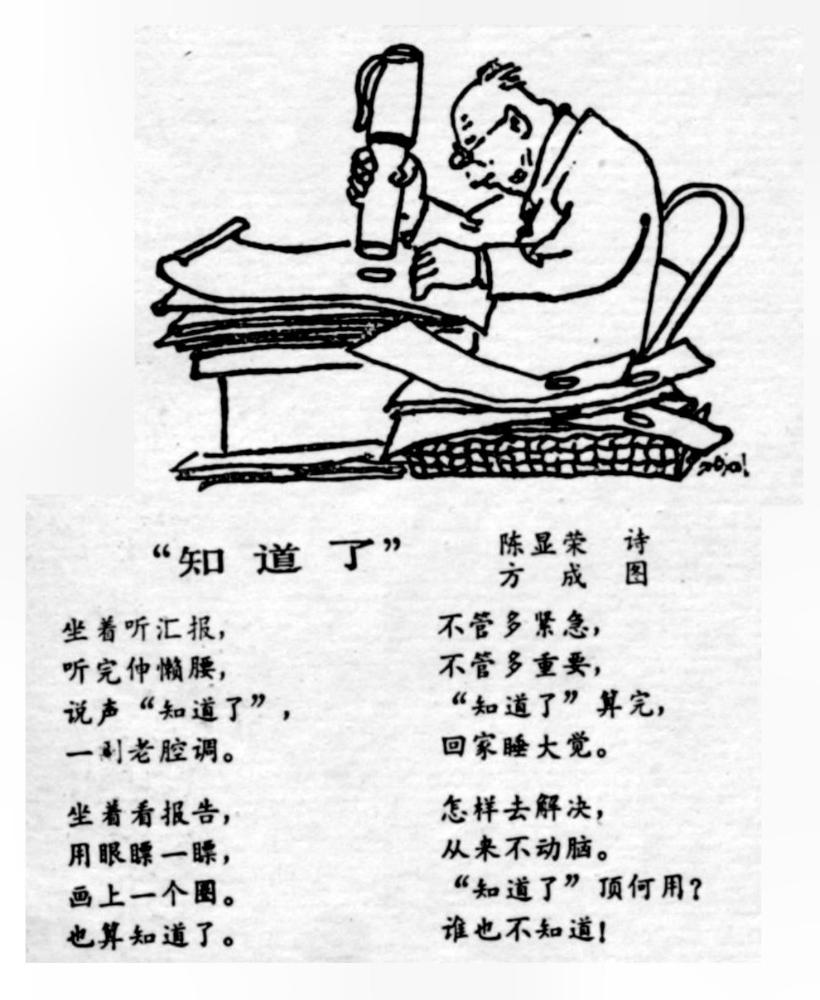

方成画；陈显荣诗 《人事》1988年第5期（总第32期），封三
“知道了”
“Noted”
- Caption
- 坐着听汇报，听完伸懒腰，说声“知道了”，一副老腔调。坐着看报告，用眼瞟一瞟，画上一个圈，也算知道了。不管多紧急，不管多重要，“知道了”算完，回家睡大觉。怎样去解决，从来不动脑。“知道了”顶何用？谁也不知道！
He sits and hears the report, stretches when it's done, says “Noted,” the same old tune. He sits and reads the report, gives it a glance, draws a circle on it — and that counts as “noted.” However urgent, however important, “noted” and that's that, then home to sleep. How to solve it he never troubles his head. What use is “noted”? Nobody knows! - Description
- A chubby official, slumped over a stack of documents with more piled beneath his chair, presses an outsized stamp onto the top sheet, leaving a circle.
- Note
- Writing 知道了 (“noted”) or drawing a circle (画圈) on a document marked it as read without committing to any action. Fang Cheng (1918–2018) was one of China's leading satirical cartoonists.
- Artists
- Fang Cheng 方成 (drawn); Chen Xianrong 陈显荣 (poem)
- Published in
- 《人事》1988年第5期（总第32期）, inside back cover
- Themes
- Paperwork and documents · Bureaucratism

Cite
Fang Cheng and Chen Xianrong, ““知道了”” [“Noted”], Renshi (Personnel) 《人事》, 1988, no. 5, inside back cover.